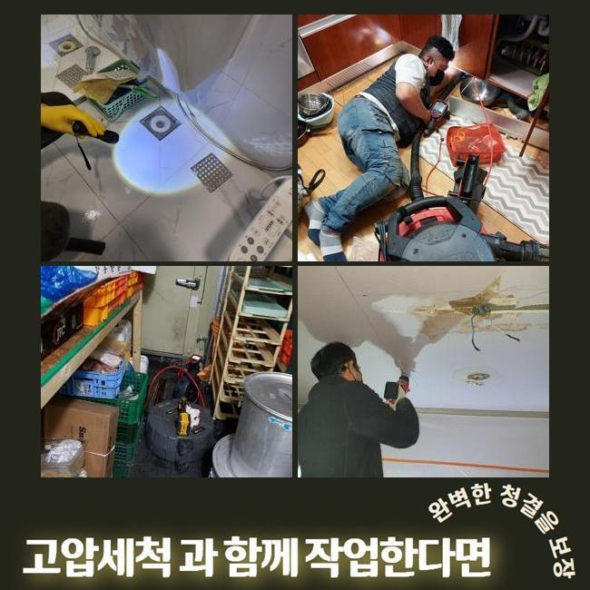
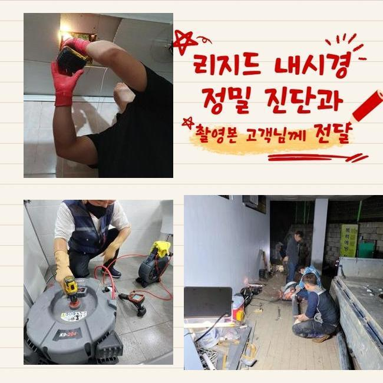
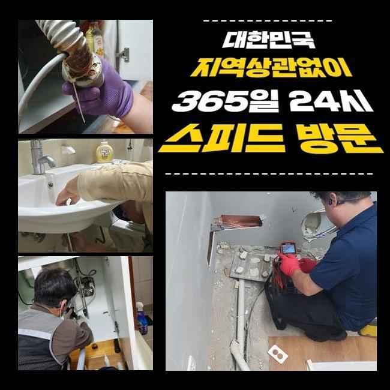
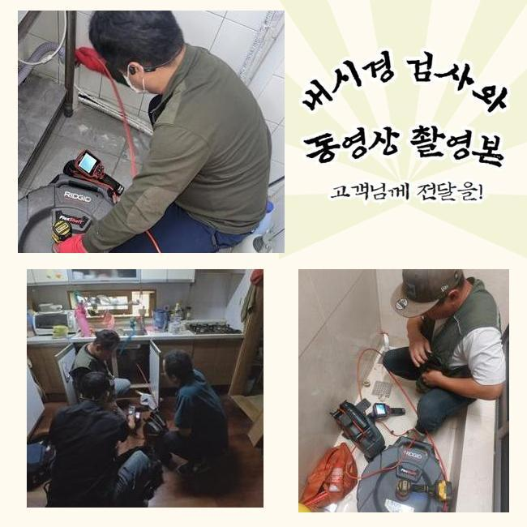
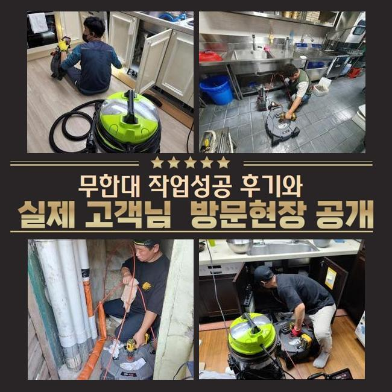
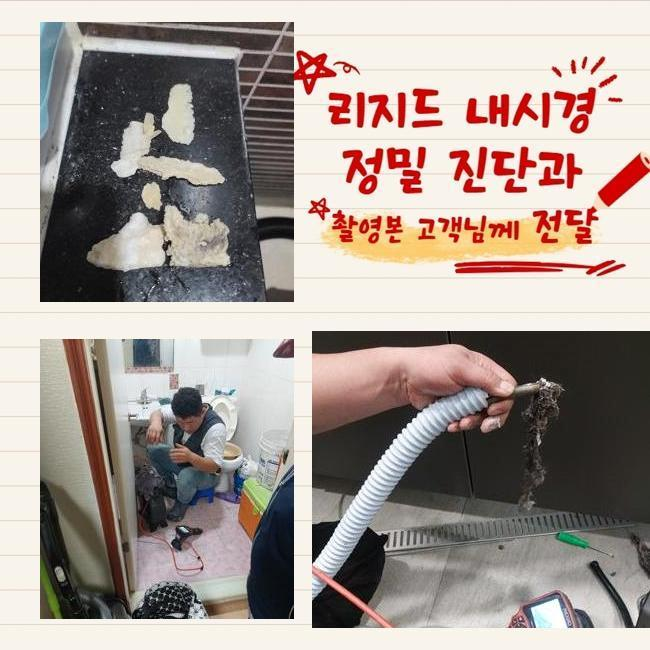
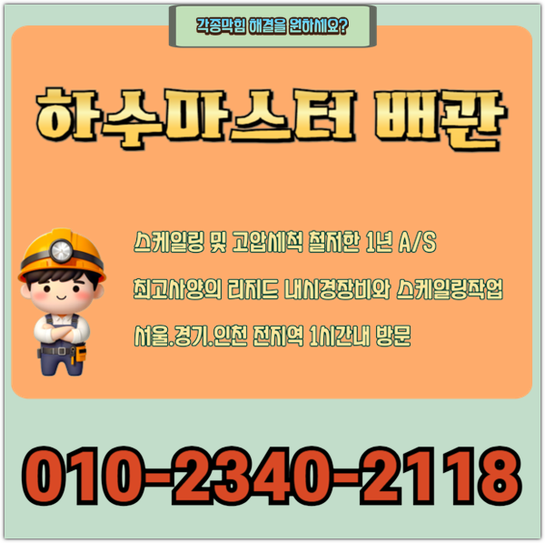

🏠 성동구 사근동변기역류 성수동 배관뚫기 수리업체
용인 변기막힘 전문 시공 후기

📋 작업 개요
- 위치: 용인
- 서비스 유형: 변기막힘, 배관막힘, 역류해결, 뚫는업체, 배관청소, 고압세척
- 작업 일시: 2025. 3. 9. 22:03
- 업체명: 하수구수사대 (010-5615-2118)
🔍 문제 상황
성동구 사근동변기역류 성수동 배관뚫기 수리업체
얼마전에 고객분의 집으로 찾아뵈어 바깥쪽에 있던 배관을 시정했는데요
전문적인 기계들을 운용시켜 확실히 처리해드렸어요
통수오류의 증세들이 불거진것은 열흘정도라고 하셨는데요
배수관은 물빠짐이 이뤄지면서 자연스럽게 이물들이 흘러가는데 내측을 시작으로 해 계속해서 축적되다가 각 라인이 막히는데요
잔해들의 축적량과 덩어리가 진 상태면 심해지게될텐데요
모든 잔해물들은 용해되는것에는 한계들이 있을 수 밖에 없어요
이렇게 배수불가의 증상들이 야기된다면 보통의 방법들로 해결될 수 없는 사례가 대다수입니다
고객님들이 셀프대처로 일반적으로 이용해보는 방법은 크리너나 과탄산소다를 쓰는것일텐데요
문제발생 후 기간이 얼마 안되었을때 시도할 수 있는 방법이겠지만 바깥이라면 개선이 안됩니다
야외에서 증세들이 야기된다면 스스로 해결하는게 힘들어 전문인의 해결방안을 생각해주시는것이 가장 효과가 좋아요

🔎 원인 분석
💡 전문가 진단: 정밀 진단 장비를 사용하여 슬러지의 고착 여부를 판명하고 타격/세척 작업을 실시했습니다.
전문가들의 내방을 통해 해당 장소에서 어떠한 영향으로 정체된건지 명확한 까닭을 특정하는건 물론이며 염기성용액들을 쓰는 조치가 아니라 빈틈없이 잔해들을 없애주어 향후에도 배수관을 청결하게 유지시킬 수 있어요
이번 물이 안빠지는 또한 저희전문가들은 적재적소에 맞는 장비들을 활용하여 안정적으로 잔해들도 제거시키고 깊은부분까지 통수길을 내주었어요
살핀 결과로 실외의 라인에서 증상이 생긴것이였고 조치하는것이 힘들어 출장을 원하셨습니다
저희의경우 의뢰인의 시간이 괜찮으시면 바로 내방하여 그 날에 시공을 들어가죠
유선으로 연락을 받아보았을 땐 문제의스팟은 마당쪽이였어요
단독주택 바깥쪽에 있던 배수구가 막힌 탓에 비들이 내릴때 솟구치는 상태였대요
특히 우천상황에서는 다양한 쓰레기와 낙엽 등 다양한 잔해가 흐르죠
마당에서 수도사용을 했을때 갑작스럽게 배수관으로 안흘러가는 현상들이 자주 있었다고 합니다
처음에는 의뢰자께서는 점차 잘 내려가겠지 생각하시곤 조치들을 방관하셨대요
예기치못하게 조치를 안한탓인지 연거푸 고이게되며 안내려갔다고 해요
그후에 며칠간의 굉장히 느린 속도로 흘러나가는걸 본 후 황급하게 문의를 주신것이였죠

🔧 작업 과정
단독으로 이루어진 형태라 이웃들에게 고충을 옮기진않았으나 고객님의 차원에서 관리적 측면의 조치가 이뤄져야되는 지점입니다
그 즉시 방문이 이뤄지는 곳들이 많이 없어 걱정이 앞섰는데 저희의경우 바로 가능했기에 문의를 빠르게 남겨주셨습니다
저희전문진들은 시기에 상관없이 공휴일에도 작업하며 1년내내 시공하므로 즉시 방문드려 청소에 몰두했어요
관로들은 좁기에 시각적으로 관찰하기에는 제약이 있습니다
문제의 배관에 내시경을 삽입해 살펴보기 어려운 지점에 잔해물이 어떠한 모습으로 자리했는지 관찰하는데요
내시경으로 쌓여진 이물들을 어떤 방식으로 청소해줘야되는건지 정해진다면 실용적인 해결책을 결정해줍니다
먼저 샤프트도구를 써보고 집수라인 근방은 고압노즐을 이용해주기로 결정하였죠
샤프트로 말씀드리면 몸체와 연결된 케이블에 체인형태의 노커부속품이 부착되어있는데 이 노커들이 벽부분에 자리한 이물뭉치들을 탈락시키는 장치에요
전문성이 두드러지는 기계들을 운용시켜 확실히 오류들을 잡아냈죠
작업시점에 혹여 처리하지 못할 시 비용청구는 없다고 안내해요
저희들은 애초에 고객분이 알려주신 장소로 달려갈때 출장관련 금액을 받는 일 없이 찾아뵙기에 비용 관련 걱정을 내놓을 수 있게되고 뚫지못한다면 비용도 안받으니 편히 의뢰해보세요!
뚫음시공 이후에 개선이 안된 상태로 철수하여 출장금액들을 받는 경우들은 단 한건도 없다고 약속합니다
방문드린 곳은 바깥쪽에 있던 곳들로서 흙같은 것들도 들어간 모습이였고 고착된 기름들과 엉키게되며 끈적하게 변하고 움직이지 못할정도로 굳어버렸죠
단단히 뭉쳐져서 중심부터 1차 통수 공간을 확보했어요
고착화가 심해 일시에 뚫어내는건 아니었는데 깊숙한 부분까지 청소시켜야 했으므로 집수시설부터 고수압의 장비들을 사용해주어야되는 현상들이었습니다
고수압의 기계들을 통해서 빈틈없이 수습이 필요했던 현상이었습니다
심층부를 확인해가며 계속해서 작업을 이어갔지만 통수들이 복구된 현상이 아니었습니다
그 까닭으로는 외부유입물과 함께 기름때들이 구간별로 구석까지 누적되어 흡착된 형태로 변모해서인데요


✅ 작업 완료
샤프트도구가 쓰일 수 없는 스팟으로 고압수청소가 필요했죠
그후에 고압세척으로 고착물들을 제거시키며 연결부분쪽에 박힌 잔해물들을 작게 만들어 청소했는데요
확실히 제거하니 약간이나마 공간이 확보되며 배수들이 이뤄졌고 내측의 라인까지 배수절차가 가능했는데요
이 상황들을 고객분에게 고지하고 해당 장소의 해결은 완료되었어요
재발방지 목적으로 사용하실 때 꾸준히 관리해보시고 혹시라도 일년동안에 또 생겨나면 저희업체가 무상보증을 지원하니 걱정할 일 없으십니다!




⚠️ 하수구 배관 막힘 예방 및 관리 가이드
- ✅ 머리카락, 비닐, 물티슈 등 물에 분해되지 않는 이물질은 하수구 유입을 절대 금지해 주세요.
- ✅ 하수구 거름망을 씌우고 모여진 이물질은 주기적으로 쓰레기통에 바로 비워주셔야 합니다.
- ✅ 배관 노후가 심할 경우 이물질이 더 쉽게 걸리므로 주기적인 배관 세척(고압세척 등)을 권장합니다.
- ✅ 작업 후 1년 이내 재발 시 하수구수사대에서 무상 A/S 보증 서비스를 제공합니다.
💡 핵심 정리
- 확실한 장비 작업(내시경 점검 및 샤프트 스케일링)으로 원인을 뿌리 뽑습니다.
- 작업 후 1년 이내에 동일한 부위 재발 시 100% 무상 A/S 서비스를 보장합니다.
- 서울 · 경기 · 인천 전 지역에 24시간 언제든 긴급 출동할 수 있도록 항시 대기 중입니다.
❓ 자주 묻는 질문 (FAQ)
🚨 용인 변기막힘 문제로 고민이신가요?
정확한 원인 진단과 확실한 시공으로 재발 없는 해결을 약속드립니다.
24시간 긴급 출동 | 서울 · 경기 · 인천 전지역 | 1년 내 재발 시 무상 A/S